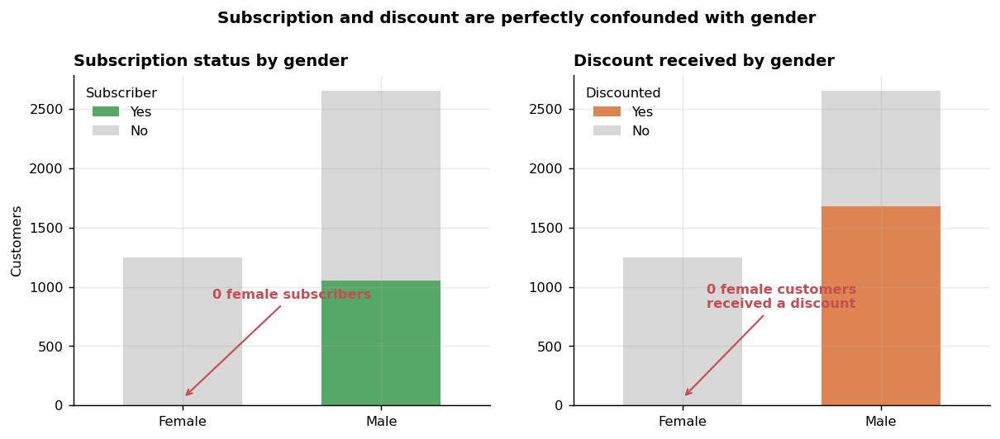
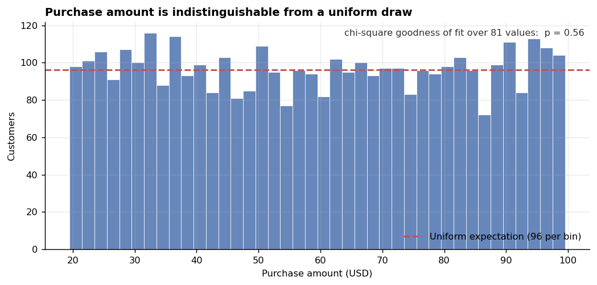
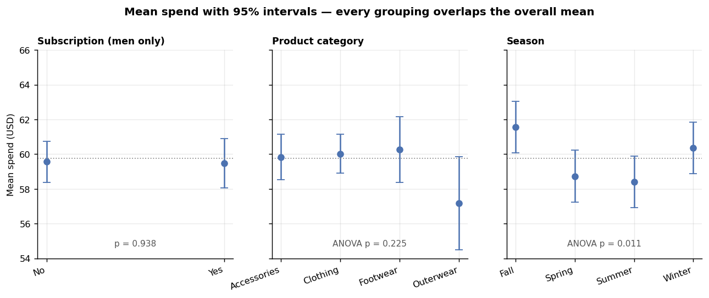

End-to-End Customer Analytics
A full analytics workflow on 3,900 customer purchase records — Python for cleaning and EDA, SQL for the analysis, Power BI for the dashboard. The profiling step reshaped the project: three structural properties of the extract determine which of the original questions it can answer, and which need a different data pull. Both are set out below.
The brief
What the analysis was supposed to answer
A retail transaction extract with demographics, product details, discount flags and a subscription indicator. The questions a business would ask of it are the obvious ones:
- Is the subscription programme working? Do subscribers spend more than non-subscribers?
- Do discounts pay for themselves? Does applying a discount raise or lower basket value?
- Which segments and categories drive revenue, and where should marketing spend go?
The workflow was built to answer all three: load and profile in Pandas, clean, run SQL aggregations and window functions, then publish a Power BI dashboard. The profiling step is where the project changed direction.
The data
3,900 rows, 18 columns, one row per customer
Load & profile
Pandas — dtypes, null audit, cardinality and distribution checks on every column.
Clean
Null handling, type conversion, category consistency checks.
Analyse
SQL — aggregation, grouping, ranking and window functions.
Report
Power BI — 18 visuals on one page: KPI card, subscription donut, revenue and sales by category and by age group, and four slicers.
Structurally the file is clean, which is why the deeper problems are easy to miss:
| Check | Result |
|---|---|
| Rows | 3,900 |
| Duplicate rows | 0 |
| Duplicate customer IDs | 0 |
| Null cells | 37 — all in Review Rating |
| Age range | 18 – 70 (mean 44.1) |
| Purchase amount range | $20 – $100 (mean $59.76) |
| Distinct locations / items | 50 / 25 |
Data quality: three properties that shape the analysis
None of these show up in a null count, and each one changes how a result should be read
1 Two columns are the same column
Discount Applied and Promo Code Used agree on all 3,900 rows — 1,677 Yes, 2,223 No, zero disagreements in either direction.
| Discount Applied ↓ / Promo Code Used → | No | Yes |
|---|---|---|
| No | 2,223 | 0 |
| Yes | 0 | 1,677 |
They are not two levers, they are one field recorded twice. Any model or dashboard treating them as separate inputs is double-counting a single effect, and any claim that "promo codes outperform general discounts" is unanswerable here.
2 Subscription is perfectly confounded with gender
This one determines how the headline business question can be answered.

| Gender | Subscribers | Non-subscribers | Received a discount |
|---|---|---|---|
| Female | 0 | 1,248 | 0 |
| Male | 1,053 | 1,599 | 1,677 |
Every subscriber is male, and every subscriber received a discount (1,053 of 1,053). So "subscribers versus non-subscribers" is not a comparison between two customer groups. It is a comparison between all men who subscribe and a mixture of men who don't and every woman in the file.
A dashboard filtered on subscription status is also filtering on gender and on discount. Any difference it shows could come from any of the three, and this extract has no way to separate them. The workable fix is to hold gender fixed and compare within it — which the findings below do.
This is not hypothetical here. The Power BI report carries a Subscription Status slicer and a Gender slicer side by side, so setting subscription to Yes silently drops every female customer from all 18 visuals — the KPI card, the category charts and the age-group charts alike. The two controls look independent and are not. Setting them in the opposite order makes the report return an empty page, which is the clearest possible signal that the field is unusable on its own.
3 The frequency field has duplicate categories
Frequency of Purchases has seven labels, but two pairs mean the same thing:
| Label | Rows | Note |
|---|---|---|
| Every 3 Months | 584 | same interval as Quarterly |
| Quarterly | 563 | same interval as Every 3 Months |
| Bi-Weekly | 547 | same interval as Fortnightly |
| Fortnightly | 542 | same interval as Bi-Weekly |
| Annually | 572 | |
| Monthly | 553 | |
| Weekly | 539 |
Left as-is, a "purchase frequency" chart shows seven bars where there should be five, and splits the quarterly cohort of 1,147 customers into two apparently mid-sized groups. Collapsing the synonyms makes quarterly the single largest frequency band — a different chart with a different reading.
Findings
What happens when the confound is controlled for
4 With gender held fixed, the subscription effect disappears
Because every subscriber is male, the only valid comparison is within male customers. Restricting to the 2,652 men removes gender from the picture entirely:
| Male customers only | n | Mean spend | Median |
|---|---|---|---|
| Subscribers | 1,053 | $59.49 | $60 |
| Non-subscribers | 1,599 | $59.57 | $60 |
| Difference | — | −$0.07 | $0 |
The same test on discounts, again within male customers, gives a difference of −$0.70 (p = 0.469) — also indistinguishable from zero.
Once gender is held constant, neither the subscription programme nor the discount flag is associated with basket value. The uncontrolled comparison cannot settle the question either way — it reflects the group composition as much as any programme effect.
5 Purchase amount carries no measurable signal
With the subscription split showing nothing, the natural next check is whether the spend column relates to any other field in the extract. On every test run here, it does not.
Purchase amount takes 81 distinct integer values spanning exactly $20 to $100, and the frequencies across those 81 values are consistent with a uniform draw — chi-square goodness of fit p = 0.56.

Correlations with every plausible driver are effectively zero:
| Variable | Pearson r | p |
|---|---|---|
| Age | −0.010 | 0.515 |
| Review Rating | +0.030 | 0.064 |
| Previous Purchases | +0.008 | 0.615 |

Group comparisons agree. One-way ANOVA on purchase amount across category p = 0.225, across all 50 locations p = 0.097. Only season crosses the 0.05 line, at p = 0.011 — and with this many tests run across the dataset, roughly one nominal pass at 0.05 is what pure noise produces. It is reported here rather than promoted to a finding.
A spend distribution that is uniform between two round bounds and uncorrelated with age, loyalty and satisfaction is characteristic of a generated sample rather than a live transaction log. The dataset remains well suited to building and demonstrating the pipeline — profiling, cleaning, SQL, dashboard. What it will not carry is a behavioural conclusion about why customers spend what they spend.
6 The state revenue ranking reflects sample size
A natural dashboard headline: Montana leads on revenue at $5,784, Kansas trails at $3,437 — a 68% gap that looks like a clear regional story.
The gap is largely a counting artifact. Rows per state range from 63 to 96 around a mean of 78. For counts of that size, random variation alone has a standard deviation of about ±8.8 customers, which is most of the observed spread. Since spend per customer is uniform noise (finding 5), state revenue is essentially customer count × a constant — and the ANOVA on spend across states returns p = 0.097.
Ranking 50 states on roughly 78 observations each and reading the extremes as performance is a small-sample trap worth naming. On this extract, no state is statistically distinguishable from any other.
What the data does support
Composition is real even when behaviour is not
Counts and shares are recorded facts, not inferences, so they stand regardless of everything above. These are reportable:
| Dimension | Composition |
|---|---|
| Gender mix | 68.0% male (2,652) / 32.0% female (1,248) |
| Category mix | Clothing 1,737 · Accessories 1,240 · Footwear 599 · Outerwear 324 |
| Subscription penetration | 27.0% overall — but 39.7% of men and 0% of women |
| Discount reach | 43.0% of all customers |
| Season split | Near-even: Spring 999 · Fall 975 · Winter 971 · Summer 955 |
| Review rating | Mean 3.75, range 2.5 – 5.0, 37 missing |
Clothing accounts for 44.5% of all transactions and Outerwear 8.3% — a genuine catalogue-mix fact a merchandising team could act on. What cannot be said is that any of these groups spends differently, because spend carries no signal.
The SQL layer
PostgreSQL — aggregation, subqueries, CASE segmentation and window functions
The subscription question is the one the whole analysis turns on, and its query is straightforward. What the query cannot show on its own is that the two groups differ by gender as well as by subscription:
-- Q5 Do subscribed customers spend more? Compare average spend and total -- revenue between subscribers and non-subscribers. select subscription_status, count(customer_id) as total_customers, round(avg(purchase_amount), 2) as avg_spend, round(sum(purchase_amount), 2) as total_revenue from customer group by subscription_status order by total_revenue, avg_spend desc;
This returns $59.49 against $59.87 — a $0.38 gap that looks like a small negative result. The profiling work is what reveals that the comparison is also splitting on gender, which is why the reported figure in finding 4 is the within-men version instead.
Customer segmentation uses a CASE ladder inside a CTE, keeping the banding logic in one place rather than repeating it across queries:
-- Q7 Segment customers into new, returning and loyal based on their total -- number of previous purchases, and show the count of each segment. with customer_type as ( select customer_id, previous_purchases, case when previous_purchases = 1 then 'New' when previous_purchases between 2 and 10 then 'Returning' else 'Loyal' end as customer_segment from customer ) select customer_segment, count(*) as "number of customers" from customer_type group by customer_segment;
And the top products per category use ROW_NUMBER partitioned by category — a ranking within groups rather than an overall one:
-- Q8 What are the top 3 most purchased products within each category? with item_counts as ( select category, item_purchased, count(customer_id) as total_orders, row_number() over (partition by category order by count(customer_id) desc) as item_rank from customer group by category, item_purchased ) select * from item_counts where item_rank <= 3;
Counting queries like this one are unaffected by everything in the findings above — order counts are recorded facts. It is only the queries that average purchase_amount that need the caveats attached.
Recommendations
What I would tell the business
- Evaluate the subscription programme on a different extract. Subscription, gender and discount are fully entangled here, so no sample size fixes it — there is no female subscriber to compare against. A pull that includes them would answer the question directly.
- Fix the export before the next pull. Drop one of the two identical discount columns, and standardise the frequency vocabulary so Quarterly and Every 3 Months are one value.
- Get the fields that carry the actual signal. One row per customer with no timestamp, no order line items and no cost data cannot answer questions about repeat behaviour, basket composition or margin. Transaction-level data with dates is the minimum for the questions being asked.
- Lead with composition, and caveat behaviour. Category mix and customer counts are solid and directly useful. Revenue-per-segment comparisons from this file need the caveats above attached.
Profiling before analysing cost about twenty lines of code and changed what the deliverable could claim. Each of these properties survives a null check, a duplicate check and a dtype check — the standard cleaning pass — so each would otherwise have reached the dashboard unflagged.
Limitations
- One row per customer, no timestamps. Nothing here supports trend, cohort or repeat-purchase analysis.
Previous Purchasesis a static count with no dates attached. - No cost or margin data. Discount profitability is unanswerable even in principle — the file records revenue only.
- The uniformity result is inference, not documentation. The distribution is statistically indistinguishable from uniform and uncorrelated with every covariate, which strongly indicates synthetic generation. The dataset ships without provenance notes confirming it.
- The season result at p = 0.011 is left open. It is most consistent with multiple-testing noise, but this analysis does not formally correct for the number of tests run, so it is reported rather than dismissed outright.